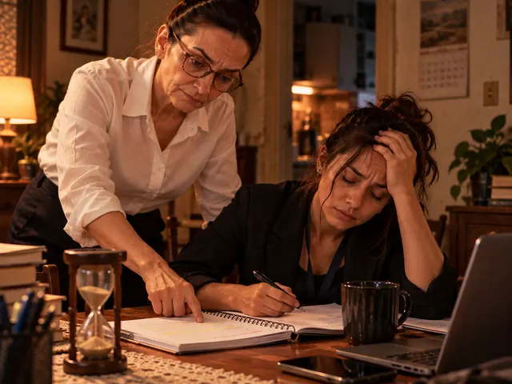
O dia termina.
A energia também.
Depois do expediente e do deslocamento, estudar parece mais uma tarefa impossível de encaixar.
No dia 10 de novembro, irei revelar ao vivo a preparação que faz o estudo caber na rotina de quem trabalha, cuida da família e tem pouco tempo. Você passa a estudar nos momentos que hoje perde, sabe todo dia o que precisa estudar para a sua prova e não se prepara mais sozinho. Nessa live vamos abrir a maior Black Friday da história do Sou Concurseiro.
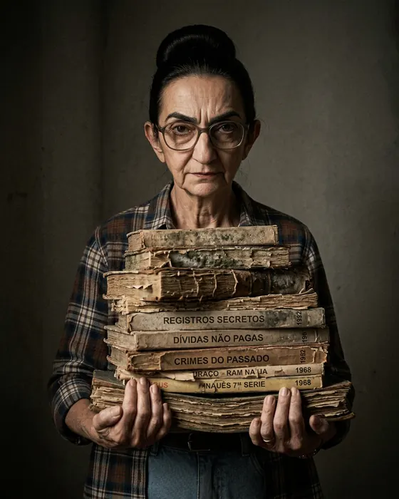
Conheça a inimiga
É ela que aparece nos nossos vídeos. Mora na cabeça de quase todo concurseiro e tem um conselho pronto para cada dia de estudo. Todos errados — e é por causa deles que tanta gente boa estuda muito e não passa.
“Se a página inteira ficou amarela, você estudou.”
“Dá o play, senta… e espera o nome no Diário Oficial.”
“Estudo de verdade é copiar a aula palavra por palavra. Faltou uma vírgula? Copia de novo.”
“Só estuda quando sobrar tempo. Meia hora por dia? Não serve.”
“Primeiro a teoria inteira. Errar questão antes da prova é perda de tempo.”
“Apostila, PDF, curso… de todo professor. Não deu tempo de ler? Compra mais.”
“O importante é estudar feliz. Matéria difícil? Pula — a banca nunca cobra.”
“Estudar é livro e apostila. Aplicativo? Plataforma? Coisa de preguiçoso.”
No dia 10 de novembro, ao vivo, o Professor Fábio mostra o jeito de estudar que aposenta a velha: feito para quem trabalha, cuida da família e estuda com o tempo que tem.
Quero ver a nova forma de estudar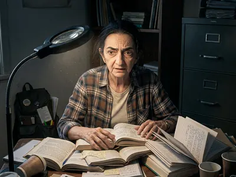
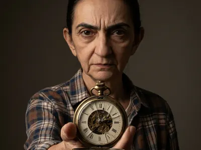
A vida não espera
Talvez a vontade de mudar já esteja aí. O que falta é encontrar um jeito de estudar no meio da vida que você tem hoje.

Depois do expediente e do deslocamento, estudar parece mais uma tarefa impossível de encaixar.
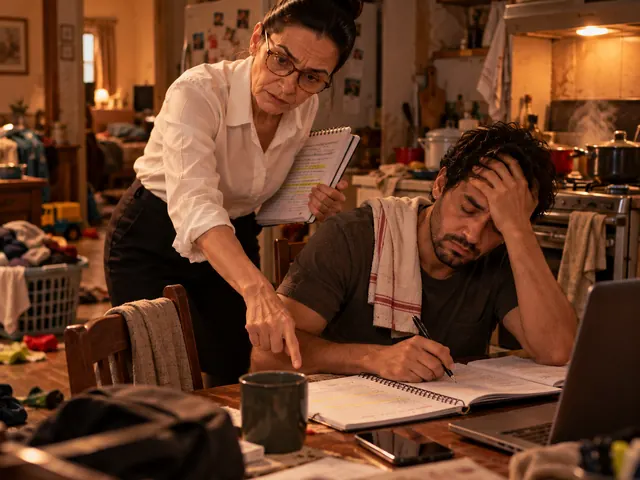
A casa, os filhos e as responsabilidades continuam. O estudo precisa conviver com tudo isso.
Entre tantas matérias e conselhos, fica difícil saber o que fazer primeiro — e o que pode esperar.
O que vamos conversar
O encontro é um convite para organizar seus próximos passos na preparação para concursos, mesmo que você esteja começando agora.
Quero dar o primeiro passo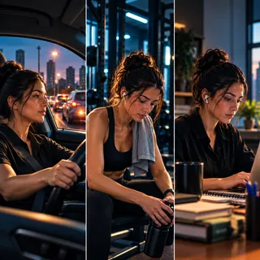
Quem já passou por aqui
Mensagens e comentários de alunos que chegaram à aprovação estudando com a gente — do jeito que eles mesmos escreveram.
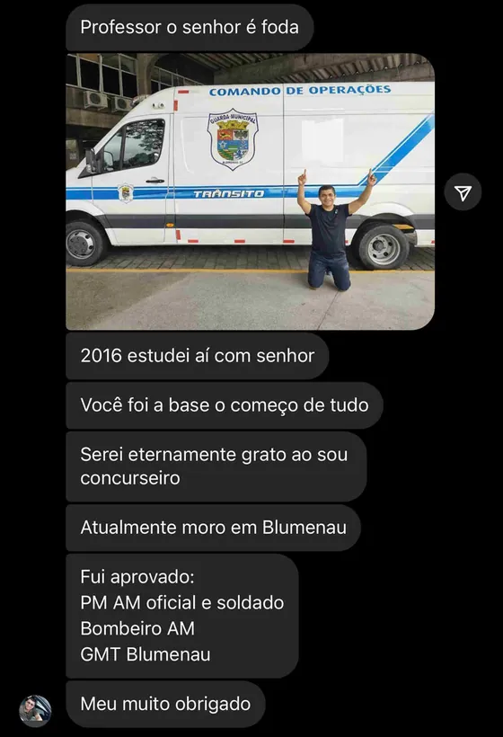
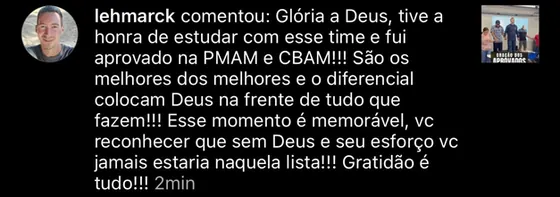
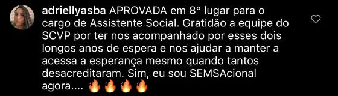
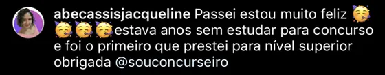
Do cadastro ao encontro
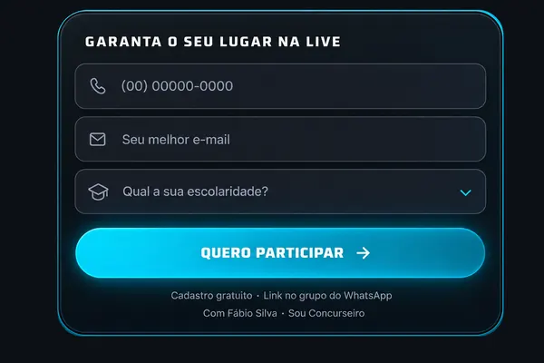
Faça seu cadastroPreencha WhatsApp, e-mail e escolaridade no formulário desta página.
Use o convite da página de confirmação para entrar no grupo do WhatsApp e receber o link.
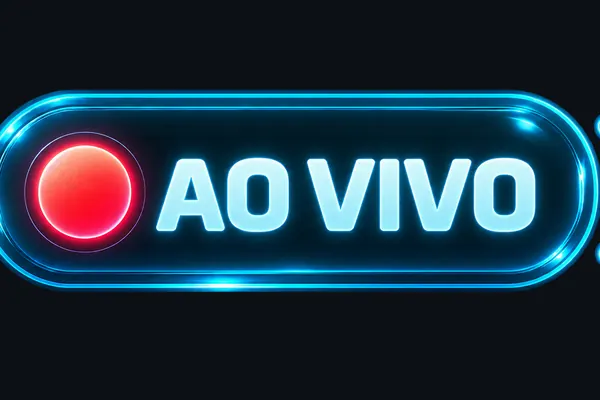
Participe ao vivo10 de novembro de 2026, às 20h de Brasília (19h de Manaus).
Durante a live, também será apresentada uma oferta de preparação do Sou Concurseiro. Você pode participar do encontro sem compromisso de compra.
Antes de se inscrever
Sim. Você participa on-line e o cadastro para o encontro é gratuito.
Sim. Vamos conversar sobre primeiros passos, prioridades e como pensar em uma rotina de estudos possível.
Não. Este convite é para você que ainda não é aluno e quer conhecer a preparação.
10 de novembro de 2026, às 20h no horário de Brasília e às 19h no horário de Manaus.
Após o cadastro, entre no grupo do WhatsApp pelo convite da página de confirmação. O link do encontro será compartilhado no grupo.
Sim. Além do conteúdo do encontro, será apresentada uma oferta do Sou Concurseiro. Os detalhes serão revelados na live, e a compra é opcional.
Seu próximo passo pode começar aqui
10/11/2026 · 20h Brasília · 19h Manaus
On-line, gratuito e ao vivo com Fábio Silva.
Cadastre-se e receba o convite para o grupo do WhatsApp.